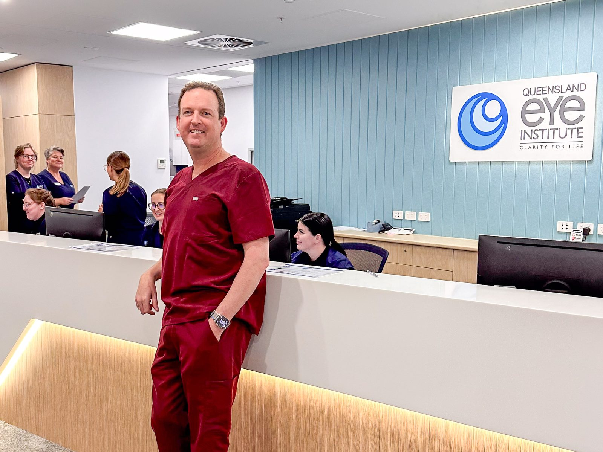
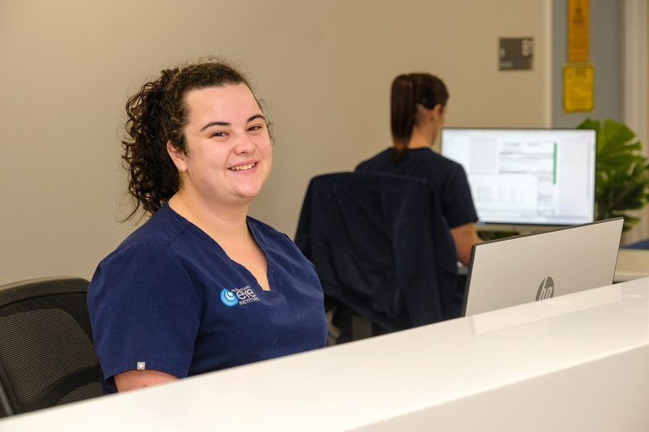
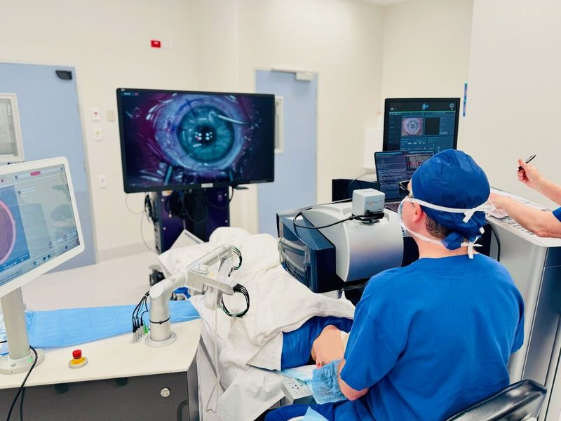
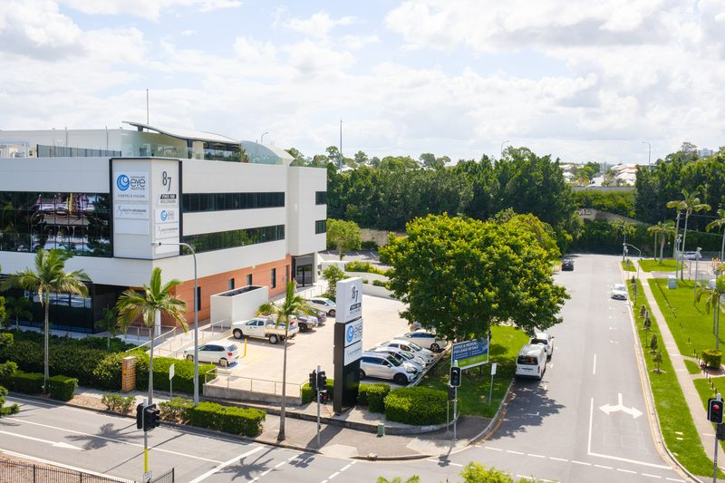
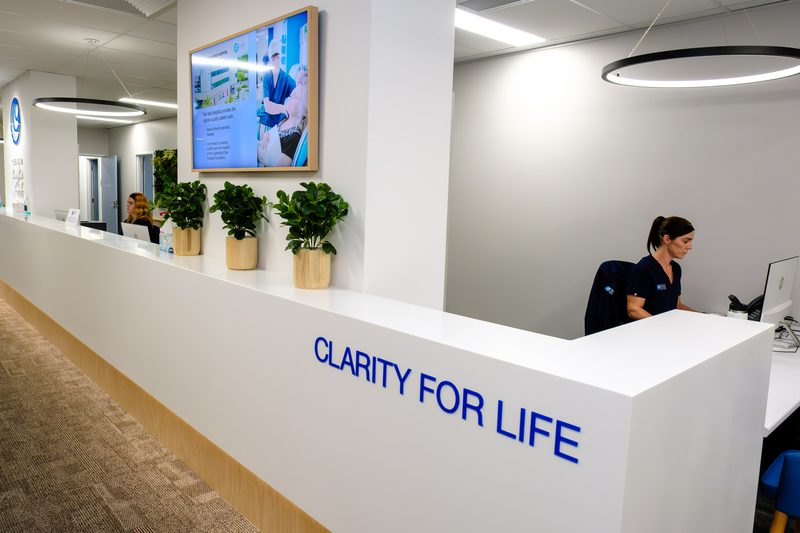
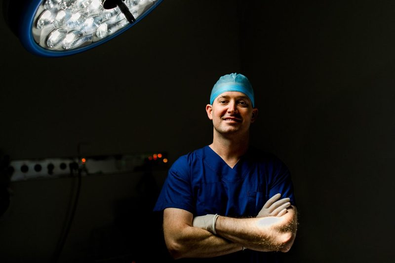

Dr Brendan Cronin
Cornea, Cataract and Anterior Segment
MBBS (Hons), DipOphthSci, BCom, LLB, FRANZCO, FWCRS
View profileFellowship-trained ophthalmologists, an optometrist-led Dry Eye Clinic and Queensland's largest independent eye research institute, working together in Brisbane so you receive the best care available.


Our dedicated Dry Eye Clinic is led by experienced therapeutically endorsed optometrists, so you can be seen quickly without waiting for an ophthalmology appointment.
Our surgeons are Fellows of the Royal Australian and New Zealand College of Ophthalmologists with advanced overseas fellowship training. Find the right specialist for your condition.
Small-incision surgery with premium lens options.
Transplants, cross-linking, CAIRS and pterygium surgery.
Macular degeneration, diabetic eye disease and retinal surgery.
Laser, medical and minimally invasive glaucoma surgery.
Optic nerve disease, double vision and unexplained vision loss.
Eyelid, tear duct and orbital surgery, thyroid eye disease.
Ray Tracing LASIK, CLEAR, TransPRK, EVO ICL and lens exchange. No referral needed.
Optometrist-led clinic. No referral needed.
Cornea, Cataract and Anterior Segment
MBBS (Hons), DipOphthSci, BCom, LLB, FRANZCO, FWCRS
View profile
Cornea, Cataract, Laser and Refractive Eye Surgery Specialist
MBBS (Hons I), BSc, CertLRS, FRANZCO
View profile
Cornea, Cataract, Refractive and Glaucoma surgery
BAppSci Optom (Hons), MBBS, FRANZCO, CertLRS (RCOphth)
View profile
Retina, Macula Specialist and Vitreoretinal Surgeon
MBChB (UK) MD(London) FRCOphth(UK) FRANZCO
View profile
Every modern procedure under one roof, performed by corneal subspecialists inside a fully accredited private hospital, so the recommendation you receive is the right one for your eyes.
Clear, reliable information written by the QEI team about the conditions we treat, what to expect and when to seek urgent care.

Level 1, 87 Ipswich Road, Woolloongabba QLD 4102
Monday to Friday, 8.00am to 5.00pm
Directions, parking and transport
Level 1, College Junction, 695 Sandgate Road, Clayfield QLD 4011
Monday to Friday, 8.00am to 4.30pm
Directions, parking and transportQueensland's largest independent academic research institute devoted to eye health. Everything we learn goes back into patient care.
Inherited, age-related and restorative eye disease research translated into better treatments.
Explore our researchTraining for registrars, fellows, optometrists, students and practice staff.
Education programmesA registered charity funding research, clinical trials and eye health education.
Support the Foundation

Dr Geoffrey Ryan recently became the first surgeon in Australia to implant the eyePlate-S glaucoma tube drainage device.

QEI invites early career optometrists to an exciting evening of retina education.
Event details
QEI invites early career optometrists to an exciting evening of retina education.
Event details
QEI invites early career optometrists to an exciting evening of retina education.
Event detailsQEI receives no recurrent government funding. Your donation funds research, clinical trials and training the next generation of eye specialists. Donations over $2 are tax deductible.